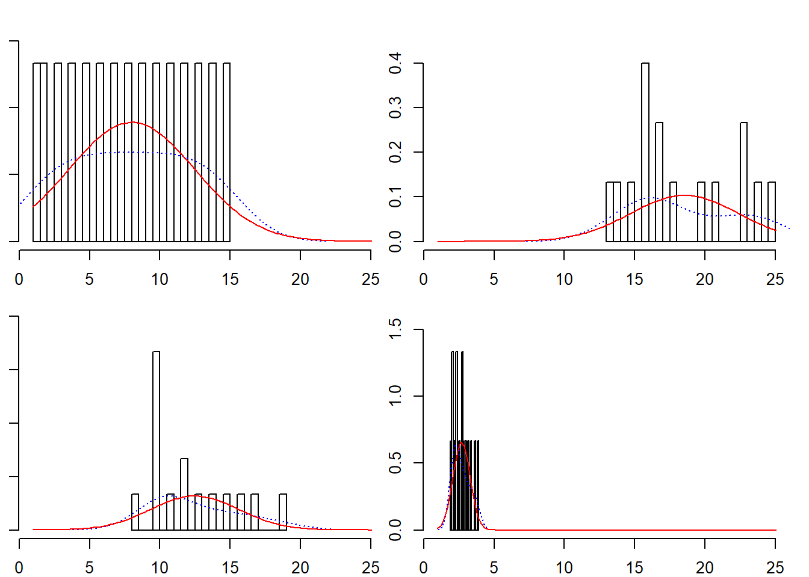

Capítulo 1 Modelos de regresión lineal múltiple
1.1 Introducción
Muchas aplicaciones del análisis de regresión involucran situaciones donde se tiene más de una variable de regresión. Un modelo de regresión que contiene más de una variable independiente recibe el nombre de Modelo de Regresión Múltiple.
En general, la variable dependiente o respuesta (y) y puede estar relacionada con k variables independientes o regresoras. El modelo
\[ \begin{equation} y=\beta _{0} + \beta _{1}X _{1} + \beta _{2}X _{2} + ... + + \beta _{k}X _{k} + \varepsilon \tag{1.1} \end {equation} \] recibe el nombre de modelo de regresión lineal múltiple con k variables de regresión. Los parámetros \(\beta _{0}\) y \(\beta _{j}\) para j = 0, 1, … , k, son parámetros desconocidos, denominados coeficientes de regresión.
\(\varepsilon\) denota el error, el cual puede ser debido a fluctuaciones aleatorias de la variable respuesta o por error en el modelo planteado.

Frecuentemente los modelos de regresión lineal múltiple se emplean como funciones de aproximación. Esto es, se desconoce la verdadera relación funcional entre y y \(x_{1},x_{2},...,x_{k}\), pero sobre ciertos rangos de las variables independientes el modelo de regresión lineal constituye una aproximación adecuada.
El siguiente bloque de código permite instalar y cargar los paquetes usados para implementar todos los conceptos de regresion lineal múltiple expuestos en este libro con R. Los cuales son los siguientes:
packages <- c(
'bookdown', 'knitr', 'rmarkdown','scatterplot3d','plotly', 'tidyverse','rgl', 'lmtest','car', 'broom','kableExtra'
)
package.check <- lapply(packages, FUN = function(x) {
if (!require(x, character.only = TRUE)) {
install.packages(x, dependencies = TRUE)
library(x, character.only = TRUE)
}
})1.2 Estimación de los parámetros de la ecuación de regresión por el método de mínimo cuadrado ordinario (M.C.O.)
El método de mínimos cuadrados ordinarios puede emplearse para estimar los coeficientes de regresión del modelo lineal múltiple de la ecuación anterior.
Supóngase que se tienen disponibles n > k observaciones y sea \(x_{ij}\) la i-ésima observación o nivel de la variable \(x_{j}\). Las observaciones son:
\[ \begin{equation} (x_{i1},x_{i2}, ..., x_{ik}, y_{i}),\hspace{1.0cm} i = 1,2, ... , n \hspace{1.0cm}y\hspace{1.0cm} n > k \end{equation} \]
Se acostumbra presentar los datos de una regresión múltiple en una tabla tal, como sigue:
$$
$$
Cada observación \((x_{i1}, x_{i2}x_{i3},...x_{ik}, y_{i})\) satisface el modelo, es decir:
\[ \begin{equation} y_{i}=\beta_{0}+\beta_{1}x_{i1}+\beta_{2}x_{i2}+ ... + \beta_{k}x_{ik}+\varepsilon_{i} \tag{1.2} \end{equation} \]
\[ \begin{equation} y_{i}=\beta_{0}+\sum_{j=1}^{k}\beta_{j}x_{ij} + \varepsilon_{i}\hspace{0.9cm} i=1,2,...,n \end{equation} \] donde: \(y_i\) es la i-esima observación de ;a respuesta para un conjunto de valores \(x_{i1},x_{i2},..,x_{ik}\) de las variables de predicción, \(\varepsilon_{i}\) es el error aleatorio no observable asociado con \(y_{i}\) y \(\beta_{0},\beta_{1},\beta_{2},...,\beta_{k}\) son \(p = k + 1\) parámetros lineales desconocidos.
Si supone el caso de la teoría basada en el modelo normal, las observaciones son variables aleatorias independientes, normalmente distribuidas con:
\[ \begin{equation} E(y_{i})=\beta_{0}+\beta_{1}x_{i1}+\beta_{2}x_{i2}+...+\beta_{k}x_{ik} \\ V(y_{i})= \sigma^2 \hspace{4cm} i =1,2,..,n \\ \tag{1.3} \end{equation} \] De esta forma, los errores son variables aleatorias independientes, normalmente distribuidos con: \(E(\varepsilon_{i})= 0\) y \(V(\varepsilon_{i})= \sigma^2\)
Demostración:
La función de mínimos cuadrados ordinarios es:
\[ \begin{equation} L=\sum_{i=1}^{n}\varepsilon_{i}^2 \end{equation} \] donde \(\varepsilon_{i}=y_{i}-\beta_{0}-\sum_{i=1}^{k}\beta_{j}x_{ij}\)
\[ L= \sum_{i=1}^n(y_i-\beta_{0}-\sum_{j}x_{ij})^2 \] Derivando L con respecto a \(\beta_{0},\beta_{1},\beta_{2},...,\beta_{k}\) ,se tiene
\[ \frac{\partial L}{\partial \beta} \Bigg|_{\hat{\beta_{0}},\hat{\beta_{1}},...,\hat\beta_{k}}=-2\sum_{i=1}^n(y_{i}-\hat{\beta_{0}}-\sum_{j=1}^k\hat{\beta_{j}}x_{ij}) \] y
\[ \frac{\partial L}{\partial \beta} \Bigg|_{\hat{\beta_{0}},\hat{\beta_{1}},...,\hat\beta_{k}}=-2\sum_{i=1}^n(y_{i}-\hat{\beta_{0}}-\sum_{j=1}^k\hat{\beta_{j}}x_{ij})x_{ij} \hspace{5.0cm} j =1,2,..,k \] Al igualar a cero a estas estimaciones de mínimos cuadrados, se obtiene:
\[ -2\sum_{i=1}^n(y_{i}-\hat{\beta_{0}}-\sum_{j=1}^k\hat{\beta_{j}}x_{ij})=0 \] \[ \frac{\partial L}{\partial \beta} \Bigg|_{\hat{\beta_{0}},\hat{\beta_{1}},...,\hat\beta_{k}}=-2\sum_{i=1}^n(y_{i}-\hat{\beta_{0}}-\sum_{j=1}^k\hat{\beta_{j}}x_{ij})x_{ij}=0 \hspace{5.0cm} j =1,2,..,k \] Después de simplificar las ecuaciones anteriores, se obtienen las ecuaciones normlaes de mínimos cuadrados ordinarios.
\[ n\hat{\beta_{0}} + \hat{\beta_{1}}\sum_{i=i}^nx_{i1} + \hat{\beta_{2}}\sum_{i=i}^nx_{i2} +...+ \hat{\beta_{k}}\sum_{i=i}^nx_{ik} = \sum_{i=1}^ny_i \] \[ \hat{\beta_{0}}\sum_{i=i}^nx_{i1} + \hat{\beta_{1}}\sum_{i=i}^nx_{i1}^2 + \hat{\beta_{2}}\sum_{i=i}^nx_{i1}x_{i2} +...+ \hat{\beta_{k}}\sum_{i=i}^nx_{i1}x_{ik}= \sum_{i=1}^nx_{i1}y_i \] \[ \vdots \vdots \vdots \vdots \vdots \] \[ \hat{\beta_{0}}\sum_{i=i}^nx_{ik} + \hat{\beta_{1}}\sum_{i=i}^nx_{ik}x_{i1} + \hat{\beta_{2}}\sum_{i=i}^nx_{ik}x_{i2} +...+ \hat{\beta_{k}}\sum_{i=i}^nx_{ik}^2= \sum_{i=1}^nx_{i1}y_i \]
Nótese que existen \(p = k +1\) ecuaciones normales, una para cada coeficiente de regresion desconocido. La solución de las ecuaciones normales son los estimadores mínimos cuadrados de los coeficientes de regresion \(\hat{\beta_{0}},\hat{\beta_{1}},...,\hat{\beta_{k}}\). La solución de las ecuaciones normales puede obtenerse con cualquier método apropiado para la solución de sistemas de ecuaciones lineales.
Ejemplo
Como ilustración vamos a usar los datos del ejemplo del libro Webster (2000) .La gerencia de Hop Scotch Airlines, la aerolínea transportadora mas pequeña del mundo, considera que existe una relación directa entre los gastos publicitarios, el ingreso nacional y el numero de pasajeros que escogen viajar por Hop Scotch. Por determinar so esta relación existe, y si es así cual podría ser la naturaleza exacta, los estadísticos empleados por Hop Scotch decidieron utilizar los procedimientos MCO para determinar el modelo de regresion múltiple.
Se recolectaron los valores mensuales por gastos de publicidad, el ingreso nacional y el numero de pasajeros para los n = 15 meses mas recientes. Los datos aparecen en la tabla @,junto con otros cálculos necesarios para hallar el modelo de regresion. Se observara que los pasajeros están representados con la variable Y, ya que se asume que depende de la publicidad y el ingreso nacional.
Los datos del ejemplo los pasamos a código para poder trabajar con ellos. A continuación el código para cargar los datos y mostrarlos utilizando el paquete kableExtra, en total se disponen de 15 observaciones.
# Definición de las variables de estudio y creación del dataframe
observaciones <- 1:15
pasajeros <- c(15,17,13,23,16,21,14,20,24,17,16,18,23,25,16)
publicidad <- c(10,12,8,17,10,15,10,14,19,10,11,13,16,10,12)
ingreso_nacional <- c(2.4,2.72,2.08,3.68,2.56,3.36,2.24,3.2,3.84,2.72,2.07,2.33,2.98,1.94,2.17)
# Creación del dataframe
datos <- data.frame(observaciones,pasajeros,publicidad,ingreso_nacional)
colnames(datos) <- c("Observaciones","Pasajeros", "Publicidad", "Ingreso Nacional")
library(kableExtra)
knitr::kable(datos,booktabs = TRUE, align = "c", caption = "Datos de la regresion multiple para Hop Scotch Airlines" ) %>%
kable_styling() %>%
kable_classic_2("hover")| Observaciones | Pasajeros | Publicidad | Ingreso Nacional |
|---|---|---|---|
| 1 | 15 | 10 | 2.40 |
| 2 | 17 | 12 | 2.72 |
| 3 | 13 | 8 | 2.08 |
| 4 | 23 | 17 | 3.68 |
| 5 | 16 | 10 | 2.56 |
| 6 | 21 | 15 | 3.36 |
| 7 | 14 | 10 | 2.24 |
| 8 | 20 | 14 | 3.20 |
| 9 | 24 | 19 | 3.84 |
| 10 | 17 | 10 | 2.72 |
| 11 | 16 | 11 | 2.07 |
| 12 | 18 | 13 | 2.33 |
| 13 | 23 | 16 | 2.98 |
| 14 | 25 | 10 | 1.94 |
| 15 | 16 | 12 | 2.17 |
Un gráfico en 3d es obligatorio para explorar la relación entre las variables, este diagrama de puede obtener usando el paquete scatterplot3d. A continuación el código para construirlo.
library(scatterplot3d)
#Se crea un gráfico en 3D para explorar la relación entre las variables
scatterplot3d(x=publicidad, y=ingreso_nacional, z=pasajeros, pch=16, cex.lab=1,
highlight.3d=TRUE, type="h", xlab='Publicidad (en miles de dolares)',
ylab='Ingreso nacional (en billones de dolares)', zlab='Pasajeros (en miles)')
De la figura anterior se ve claramente que a medida que aumenta el gasto en publicidad y aumenta el ingreso nacional se tienden a aumentar el numero de pasajeros en miles.
El mismo diagrama de dispersión anterior se puede crear usando el paquete plotly. El cual permite al lector muchas mas posibilidades con el diagrama como moverlo, acercarlo, etc.
library(plotly)
plot_ly(x=publicidad, y=ingreso_nacional, z=pasajeros, type="scatter3d", color=pasajeros) %>%
layout(scene = list(xaxis = list(title = 'Publicidad (en miles de dolares)'),
yaxis = list(title = 'Ingreso nacional (en billones de dolares)'),
zaxis = list(title = 'Pasajeros (en miles)')))Otro gráfico de dispersión en 3d se puede construir usando el paquete rgl. A continuación está el código para obtener el diagrama de dispersión.
library(rgl)
plot3d(x=publicidad, y=ingreso_nacional, z=pasajeros, type='s', col='green',
xlab='Publicidad (en miles de dolares)',
ylab='Ingreso nacional (en billones de dolares)',
zlab='Pasajeros (en miles)')Basándonos en el diagrama de dispersión 3d, el modelo que se va a ajustar se muestra a continuación:
\[ \begin{equation} Pasajeros \sim N(\mu_{i},\sigma^{2}),\\ \mu_{i} = \beta_{0} + \beta_{1}Publicidad_{i} + \beta_{2}Ingreso_{i},\\ \sigma^{2} = constante \end{equation} \]
Así se crea el modelo de regresión múltiple ajustado con código:
library(broom)
# Ajustar un modelo de regresión lineal múltiple
modelo <- lm(pasajeros ~ publicidad + ingreso_nacional, data = datos)
# Utilizar el paquete broom para obtener resúmenes y estadísticas del modelo
summary(modelo)##
## Call:
## lm(formula = pasajeros ~ publicidad + ingreso_nacional, data = datos)
##
## Residuals:
## Min 1Q Median 3Q Max
## -2.6489 -1.4443 -0.3563 0.5748 8.2848
##
## Coefficients:
## Estimate Std. Error t value Pr(>|t|)
## (Intercept) 8.0153 3.3996 2.358 0.0362 *
## publicidad 1.1078 0.4827 2.295 0.0406 *
## ingreso_nacional -1.2258 2.5037 -0.490 0.6332
## ---
## Signif. codes: 0 '***' 0.001 '**' 0.01 '*' 0.05 '.' 0.1 ' ' 1
##
## Residual standard error: 2.795 on 12 degrees of freedom
## Multiple R-squared: 0.5487, Adjusted R-squared: 0.4735
## F-statistic: 7.296 on 2 and 12 DF, p-value: 0.008445## # A tibble: 3 × 5
## term estimate std.error statistic p.value
## <chr> <dbl> <dbl> <dbl> <dbl>
## 1 (Intercept) 8.02 3.40 2.36 0.0362
## 2 publicidad 1.11 0.483 2.29 0.0406
## 3 ingreso_nacional -1.23 2.50 -0.490 0.633## # A tibble: 1 × 12
## r.squared adj.r.squared sigma statistic p.value df logLik AIC BIC
## <dbl> <dbl> <dbl> <dbl> <dbl> <dbl> <dbl> <dbl> <dbl>
## 1 0.549 0.474 2.79 7.30 0.00845 2 -35.0 78.1 80.9
## # ℹ 3 more variables: deviance <dbl>, df.residual <int>, nobs <int>## # A tibble: 15 × 9
## pasajeros publicidad ingreso_nacional .fitted .resid .hat .sigma .cooksd
## <dbl> <dbl> <dbl> <dbl> <dbl> <dbl> <dbl> <dbl>
## 1 15 10 2.4 16.2 -1.15 0.124 2.90 0.00913
## 2 17 12 2.72 18.0 -0.975 0.0784 2.90 0.00374
## 3 13 8 2.08 14.3 -1.33 0.228 2.88 0.0288
## 4 23 17 3.68 22.3 0.663 0.260 2.91 0.00889
## 5 16 10 2.56 16.0 0.0448 0.177 2.92 0.0000224
## 6 21 15 3.36 20.5 0.486 0.163 2.91 0.00235
## 7 14 10 2.24 16.3 -2.35 0.112 2.82 0.0333
## 8 20 14 3.2 19.6 0.398 0.137 2.92 0.00124
## 9 24 19 3.84 24.4 -0.356 0.379 2.92 0.00533
## 10 17 10 2.72 15.8 1.24 0.272 2.89 0.0336
## 11 16 11 2.07 17.7 -1.66 0.192 2.87 0.0348
## 12 18 13 2.33 19.6 -1.56 0.228 2.87 0.0397
## 13 23 16 2.98 22.1 0.913 0.229 2.90 0.0137
## 14 25 10 1.94 16.7 8.28 0.199 0.853 0.912
## 15 16 12 2.17 18.6 -2.65 0.222 2.78 0.110
## # ℹ 1 more variable: .std.resid <dbl>Con los resultados obtenidos en el Chunk ??, se puede expresar el modelo ajustado como se muestra a continuación:
\[ \begin{equation} \widehat{Tiempo_{i}} \sim N(\hat{\mu_{i}},\hat{\sigma}^{2}), \hat{\mu_{i}} = 8.0153 + 1.1078Publicidad_{i} - 1.2258Ingreso_{i}, \hat{\sigma}=2.795 \end{equation} \] Para incluir el plano de regresión que representa el modelo ajustado anterior se puede usar el siguiente código:
# Se crea el gráfico 3d y se guarda en un objeto
library(scatterplot3d)
mi_modelo_3d <- scatterplot3d(x=publicidad, y=ingreso_nacional, z=pasajeros, pch=16, cex.lab=1,
highlight.3d=TRUE, type="h", xlab='Publicidad (en miles de dolares)',
ylab='Ingreso nacional (en billones de dolares)', zlab='Pasajeros (en miles)')
# Para agregar el plano usamos $plane3d( ) con argumento modelo ajustado
mi_modelo_3d$plane3d(modelo, lty.box="solid", col='mediumblue')
Solución:
# Número total de observaciones
num_observaciones <- nrow(datos)
# Sumatoria de la columna de la variable dependiente (Y)
sum_y <- sum(datos$Pasajeros)
# Sumatoria de la columna de la primera variable independiente (X1: Publicidad)
sum_x1 <- sum(datos$Publicidad)
# Sumatoria de la columna de la segunda variable independiente (X2: Ingreso Nacional)
sum_x2 <- sum(datos$`Ingreso Nacional`)
# Sumatoria de la columna de los cuadrados de la primera variable independiente (X1^2)
sum_x1_squared <- sum(datos$Publicidad^2)
# Sumatoria de la columna de los cuadrados de la segunda variable independiente (X1^2)
sum_x2_squared <- sum(datos$`Ingreso Nacional`^2)
# Sumatoria de la columna de la multiplicación entre X1 y X2
sum_x1_x2 <- sum(datos$Publicidad * datos$`Ingreso Nacional`)
# Sumatoria de la columna de la multiplicación entre X1 y Y
sum_x1_y <- sum(datos$Publicidad * datos$Pasajeros)
# Sumatoria de la columna de la multiplicación entre X2 y Y
sum_x2_y <- sum(datos$`Ingreso Nacional` * datos$Pasajeros)
# Imprimir los resultados
cat("Numero total de observaciones:", num_observaciones, "\n")## Numero total de observaciones: 15## Sumatoria de la columna de Y: 278## Sumatoria de la columna de X1: 187## Sumatoria de la columna de X2: 40.29## Sumatoria de la columna de X1^2: 2469## Sumatoria de la columna de X2^2: 113.3387## Sumatoria de la columna de X1 * X2: 525.38## Sumatoria de la columna de X1 * Y: 3590## Sumatoria de la columna de X2 * Y: 766.02\[ n\hat{\beta_{0}} + \hat{\beta_{1}}\sum_{i=1}^nx_{i1} + \hat{\beta_{i2}}\sum_{i=1}^nx_{i2} = \sum_{i=1}^ny_{i} \\ \hat{\beta_{0}}\sum_{i=1}^nx_{i1} + \hat{\beta_{1}}\sum_{i=1}^nx_{i1}^2 + \hat{\beta_{i2}}\sum_{i=1}^nx_{i1}x_{i2} = \sum_{i=1}^nx_{i1}y_{i} \\ \hat{\beta_{0}}\sum_{i=1}^nx_{i2} + \hat{\beta_{1}}\sum_{i=1}^nx_{i1}x_{i2} + \hat{\beta_{i2}}\sum_{i=1}^nx_{i2}^2 = \sum_{i=1}^nx_{i2}y_{i} \]
Al sustituir las sumatorias calculadas en las ecuaciones normales, se tiene que:
\[ 15\hat{\beta_{0}} + 187\hat{\beta_{1}} + 40.29\hat{\beta_{i2}} = 278 \\ 187\hat{\beta_{0}} + 2469\hat{\beta_{1}} + 525.38\hat{\beta_{i2}} = 3590 \\ 40.29\hat{\beta_{0}} + 525.38\hat{\beta_{1}} + 113.3387\hat{\beta_{i2}} = 766.02 \] La solución de este conjunto de ecuaciones es:
\[ \hat{\beta_{0}}= 8.015345 \\ \hat{\beta_{1}}= 1.107798 \\ \hat{\beta_{2}}= -1.225824 \\ \tag{1.4} \] Lo cual se hace con R de la siguiente manera:
# Definir la matriz de coeficientes (lado izquierdo del sistema)
n <- length(pasajeros)
A <- matrix(c(n, sum_x1, sum_x2, sum_x1, sum_x1_squared, sum_x1_x2, sum_x2, sum_x1_x2, sum_x2_squared), ncol = 3)
# Definir el vector del lado derecho del sistema
B <- c(sum_y, sum_x1_y, sum_x2_y)
# Resolver el sistema de ecuaciones lineales
coefs_beta <- solve(A, B)
# Imprimir los coeficientes estimados
cat("Coeficientes estimados (beta0, beta1, beta2):", coefs_beta, "\n")## Coeficientes estimados (beta0, beta1, beta2): 8.015345 1.107798 -1.225824Por lo tanto, la ecuación de regresión ajustada es:
\[ \begin{equation} \hat{Y} = 8.0153 + 1.1078x_{1} - 1.2258x_{2} \end{equation} \]
Como se puede observar de ambas maneras se llega al mismo resultado (ya que internamente la función lm() realiza eso).
Finalmente, esta ecuación puede emplearse para predecir el numero de pasajeros para pares de valores de las variables de regresion, publicidad e ingreso nacional.
1.3 Enfoque matricial para un modelo de regresión lineal múltiple
Al ajustar un modelo de regresión lineal múltiple es mucho mas conveniente expresar las operaciones matemáticas en forma matricial, ya que simplifica en gran medida la presentación.
Dada una muestra aleatoria de observaciones \(Y_{1},Y_{2},...,Y_{n}\) en los puntos de observación \(x_{11},x_{12},...,x_{1k},x_{21},x_{22},...,x_{2k},...,x_{n1},x_{n2},...,x_{nk}\), respectivamente, con base en el modelo lineal general, se tienen las n ecuaciones siguientes:
$$ \[\begin{equation} Y_{1}=\beta _{0} + \beta _{1}X _{11} + \beta _{2}X _{12} + ... + + \beta _{k}X _{1k} + \varepsilon_{1} \\ Y_{2}=\beta _{0} + \beta _{1}X _{21} + \beta _{2}X _{22} + ... + + \beta _{k}X _{2k} + \varepsilon_{2} \\ \vdots \\ Y_{n}=\beta _{0} + \beta _{1}X _{n1} + \beta _{2}X _{n2} + ... + + \beta _{k}X _{nk} + \varepsilon_{n} \end{equation}\] $$
Como resultado, el modelo lineal múltiple también puede expresarse en forma matricial como:
\[ \begin{equation} Y = \boldsymbol{X\beta+\varepsilon} \end{equation} \tag{1.5} \]
donde:
\[ \begin{equation} \mathbf{Y} = \begin{bmatrix} Y_{1}\\ Y_{2}\\ \vdots \\ Y_{n} \end{bmatrix}_{nx1} \mathbf{X} =\begin{bmatrix} 1& X_{11}& X_{12}& \cdots & X_{1k}\\ 1& X_{12}& X_{22}& \cdots& X_{2k}\\ \vdots & \vdots& \vdots& \ddots & \vdots\\ 1& X_{n1}& X_{n2}& \cdots& X_{nk} \end{bmatrix}_{nxp} \boldsymbol{\beta } = \begin{bmatrix} \beta_{1}\\ \beta_{2}\\ \vdots \\ \beta_{n} \end{bmatrix}_{px1} \boldsymbol{\varepsilon } = \begin{bmatrix} \varepsilon_{1}\\ \varepsilon_{2}\\ \vdots \\ \varepsilon_{n} \end{bmatrix}_{nx1} \end{equation} \]
En general, Y es un vector de observaciones de orden n x 1, \(\mathbf{X}\) es una matriz (n x p) de los niveles de las variables independientes, \(\boldsymbol{\beta }\) es un vector de orden p x 1, formado por los coeficientes de regresion y \(\boldsymbol{\varepsilon}\) es un vector de orden n x 1 de errores aleatorios.
1.4 Supuestos básicos del modelo de regresión utilizando notación matricial
a.- Los errores están distribuidos normalmente con media cero y varianza constante. \(\boldsymbol{\varepsilon}\sim N(0,\sigma^2I)\).
\(E(\boldsymbol{\varepsilon})=0\), donde el valor de cada uno de sus elementos es cero, el cual se demuestra de la siguiente manera:
\[ \begin{equation} \varepsilon = \begin{bmatrix} \varepsilon_{1}\\ \varepsilon_{2}\\ \vdots \\ \varepsilon_{n} \end{bmatrix} = \begin{bmatrix} E(\varepsilon_{1})\\ E(\varepsilon_{2})\\ \vdots \\ E(\varepsilon_{n}) \end{bmatrix} = \begin{bmatrix} 0\\ 0\\ \vdots \\ 0 \end{bmatrix} \tag{1.6} \end{equation} \]
la varianza se expresa como : \(E(\boldsymbol{\varepsilon\varepsilon'})=\sigma^2\boldsymbol{I}\) es decir, es una forma concreta de expresar que los errores están correlacionados y que tienen varianza constante. Por lo tanto, su expresión matricial viene dada por:
\[ E(\boldsymbol{\varepsilon\varepsilon'})=E\begin{bmatrix} \begin{bmatrix} \varepsilon_{1}\\ \varepsilon_{2}\\ \vdots \\ \varepsilon_{n} \end{bmatrix}_{nx1} \begin{bmatrix} \varepsilon_{1}& \varepsilon_{2}& \cdots & \varepsilon_{n} \end{bmatrix}_{1xn} \end{bmatrix} \]
Efectuando la multiplicación se obtiene:
\[ E(\boldsymbol{\varepsilon\varepsilon'})=E\begin{bmatrix} \varepsilon_{1}^2& \varepsilon_{1}\varepsilon_{2}& \cdots & \varepsilon_{1}\varepsilon_{n}\\ \varepsilon_{2}\varepsilon_{1}& \varepsilon_{2}^2& \cdots& \varepsilon_{2}\varepsilon_{n}\\ \vdots & \vdots & \ddots & \vdots\\ \varepsilon_{n}\varepsilon_{1}& \varepsilon_{n}\varepsilon_{2}& \cdots& \varepsilon_{n}^2 \end{bmatrix}_{nxn} \]
Aplicando el operador del valor esperado(E), se tiene:
\[ E(\boldsymbol{\varepsilon\varepsilon'})=E\begin{bmatrix} E(\varepsilon_{1}^2)& E(\varepsilon_{1}\varepsilon_{2})& \cdots & E(\varepsilon_{1}\varepsilon_{n})\\ E(\varepsilon_{2}\varepsilon_{1})& E(\varepsilon_{2}^2)& \cdots& E(\varepsilon_{2}\varepsilon_{n})\\ \vdots & \vdots & \ddots & \vdots\\ E(\varepsilon_{n}\varepsilon_{1})& E(\varepsilon_{n}\varepsilon_{2})& \cdots& E(\varepsilon_{n}^2) \end{bmatrix}_{nxn} \]
Debido a los supuestos de homocedasticidad y no correlación, la matriz se reduce a:
\[ E(\boldsymbol{\varepsilon\varepsilon'})=\begin{bmatrix} \sigma^2& 0& \cdots & 0\\ 0& \sigma^2& \cdots& 0\\ \vdots & \vdots & \ddots & \vdots\\ 0& 0& \cdots& \sigma^2 \end{bmatrix}_{nxn} \]
\[ E(\boldsymbol{\varepsilon\varepsilon'})=\begin{bmatrix} 1& 0& \cdots & 0\\ 0& 1& \cdots& 0\\ \vdots & \vdots & \ddots & \vdots\\ 0& 0& \cdots& 1 \end{bmatrix}_{nxn} \]
\[ \begin{equation} E(\boldsymbol{\varepsilon\varepsilon'})=\sigma^2\boldsymbol{I} \tag{1.7} \end{equation} \]
b.- La matriz \(\mathbf{X}\) de orden n x p no es aleatoria, lo cual implica que está formada por números fijos, es decir, el análisis de regresión es un análisis condicional, por lo cual los valores de y dependen de los valores fijos de las variables x.
c.- \(\mathbf{Y} \sim N(\mathbf{X \boldsymbol{\beta}}, \sigma^2\mathbf{I)}\)
1.5 Estimación de los parámetros del modelo por el método M.C.O., utilizando la notación matricial.
Se desea encontrar el vector de estimadores de mínimos cuadrados, \(\hat{\beta}\) que minimiza la expresión:
\[ \begin{equation} \boldsymbol{\varepsilon=Y-X\beta} \tag{1.8} \end{equation} \] Premultiplicando ambos lados por \(\beta'\)
\[ \begin{equation} \boldsymbol{\varepsilon'\varepsilon=(Y-X\beta)'(Y-X\beta)} \end{equation} \]
\[ \sum_{i=1}^n\varepsilon_{i}^2=\boldsymbol{(Y-X\beta)'(Y-X\beta)} \] \[ \sum_{i=1}^n\varepsilon_{i}^2=\boldsymbol{(Y'-X'\beta')(Y-X\beta)=Y'Y-Y'X\beta-\beta'X'Y+\beta'X'X\beta} \]
\[ \begin{equation} \frac{ \partial \sum_{i=1}^n\varepsilon_{i}^2}{\partial x} \Bigg|_{\hat{\beta}}= \boldsymbol{X'Y+X'X\hat{\beta}+\hat{\beta}'X'X=-2X'Y+2X'X\hat{\beta}=0} \end{equation} \] Simplificando, se tiene:
\[ \begin{equation} \boldsymbol{X'X\hat{\beta}=X'Y} \end{equation} \] Estas ecuaciones son llamadas ecuaciones normales mínimos cuadrados. Para resolver dichas ecuaciones se premultiplicando ambos lados por la inversa de la matriz \(\boldsymbol{X'X}\) por lo tanto la expresión matricial para obtener los estimadores mínimos cuadrados \(\hat{\beta_{0}}\) y \(\hat{\beta_{1}}\), viene dada por:
\[ \begin{equation} \boldsymbol{(X'X)^{-1}(X'X)\hat{\beta}=(X'X)^{-1}X'Y} \end{equation} \] \[ \begin{equation} \boldsymbol{\hat{\beta}=(X'X)^{-1}X'Y} \end{equation} \] La forma matricial de este modelo es: \(\boldsymbol{\hat{Y}=X\hat{\beta}}\)
Este vector de valores estimados se puede escribir así: \[ \begin{equation} \boldsymbol{\hat{Y}=X(X'X)^{-1}X'Y} \end{equation} \]
\[ \begin{equation} \boldsymbol{\hat{Y}=HY} \tag{1.9} \end{equation} \] La matriz \(\boldsymbol{H=X(X'X)^{-1}X'}\) es llamada usualmente matriz “sombrero” de orden n x n
Las diferencias entre los valores observados \(y_{i}\) y los valores estimados \(\hat{y_{i}}\) son los residuales \(e_{i}=y_{i}-\hat{y_{i}}\). Los residuales pueden escribirse matricialmente así:
\[ \begin{equation} \boldsymbol{e=Y-\hat{Y}} \tag{1.10} \end{equation} \]
\[ \begin{equation} \boldsymbol{=Y-HY} \end{equation} \]
\[ \boldsymbol{(I-H)Y} \]
En el ejemplo anterior se ilustro el ajuste del modelo de regresión múltiple. \[ \begin{equation} y=\beta_{0}+\beta_{1}x_{1}+\beta_{2}x_{2}+\varepsilon \end{equation} \] Donde \(y\) es el numero de pasajeros observado que escogen viajar por Hop Scotch, \(x_{1}\) es el gasto en publicidad y \(x_{2}\) es el ingreso nacional. Ahora se utilizara el enfoque matricial para ajustar el modelo de regresión anterior a este conjunto de datos. La matriz \(\boldsymbol{X}\) y el vector \(\boldsymbol{Y}\) para este modelo son:
\[ \begin{equation} \boldsymbol{X} = \begin{bmatrix} 1& 10& 2.40\\ 1& 12& 2.72\\ 1& 8& 2.08\\ \vdots & \vdots& \vdots\\ 1& 12& 2.17 \end{bmatrix}_{15x3} \boldsymbol{Y} = \begin{bmatrix} 15\\ 17\\ 13\\ \vdots \\ 16 \end{bmatrix}_{15x1} \tag{1.11} \end{equation} \] La matriz \(\boldsymbol{X'X}\) es
\[ \begin{equation} \boldsymbol{X'X}=\begin{bmatrix} 1& 1& \cdots& 1\\ 10& 12& \cdots& 12\\ 2.40& 2.72& \cdots& 2.17 \end{bmatrix}_{3x15} \begin{bmatrix} 1& 10& 2.40\\ 1& 12& 2.72\\ \vdots & \vdots& \vdots\\ 1& 12& 2.17 \end{bmatrix}_{15x3} \\ = \begin{bmatrix} 15& 187 & 40.29\\ 187& 2469& 525.38\\ 40.29 & 525.38 & 113.3387 \end{bmatrix} \end{equation} \] En R se hace de la siguiente manera:
identidad <- rep(1,15)
publicidad <- c(10,12,8,17,10,15,10,14,19,10,11,13,16,10,12)
ingreso_nacional <- c(2.4,2.72,2.08,3.68,2.56,3.36,2.24,3.2,3.84,2.72,2.07,2.33,2.98,1.94,2.17)
x <- cbind(identidad,publicidad, ingreso_nacional)
x## identidad publicidad ingreso_nacional
## [1,] 1 10 2.40
## [2,] 1 12 2.72
## [3,] 1 8 2.08
## [4,] 1 17 3.68
## [5,] 1 10 2.56
## [6,] 1 15 3.36
## [7,] 1 10 2.24
## [8,] 1 14 3.20
## [9,] 1 19 3.84
## [10,] 1 10 2.72
## [11,] 1 11 2.07
## [12,] 1 13 2.33
## [13,] 1 16 2.98
## [14,] 1 10 1.94
## [15,] 1 12 2.17## identidad publicidad ingreso_nacional
## identidad 15.00 187.00 40.2900
## publicidad 187.00 2469.00 525.3800
## ingreso_nacional 40.29 525.38 113.3387y el vector \(\boldsymbol{X'Y}\) es:
\[ \begin{equation} \boldsymbol{X'Y}=\begin{bmatrix} 1& 1& \cdots& 1\\ 10& 12& \cdots& 12\\ 2.40& 2.72& \cdots& 2.17 \end{bmatrix}_{3x15} \begin{bmatrix} 15\\ 17\\ \vdots \\ 16 \end{bmatrix}_{15x1} = \begin{bmatrix} 278.00\\ 3590\\ 766.02 \end{bmatrix} \end{equation} \]
## [,1]
## identidad 278.00
## publicidad 3590.00
## ingreso_nacional 766.02Los estimadores mínimos cuadrados se obtienen a partir de la ecuación:
\[ \begin{equation} \boldsymbol{\hat{\beta}=(X'X)^{-1}X'Y} \tag{1.12} \end{equation} \] \[ \begin{equation} \begin{bmatrix} \hat{\beta_{0}}\\ \hat{\beta_{1}}\\ \hat{\beta_{2}} \end{bmatrix} = \begin{bmatrix} 15& 187 & 40.29\\ 187& 2469& 525.38\\ 40.29 & 525.38 & 113.3387 \end{bmatrix}^{-1} \end{equation} \begin{bmatrix} 278.00\\ 3590\\ 766.02 \end{bmatrix} \\ = \begin{bmatrix} 1.47945972& -0.01040009 & -0.4777135\\ -0.01040009& 0.02982778& -0.1345692\\ -0.47771354 & -0.13456922 & 0.8024360 \end{bmatrix} \begin{bmatrix} 278.00\\ 3590\\ 766.02 \end{bmatrix} \\ = \begin{bmatrix} 8.015345\\ 1.107798\\ -1.225824 \end{bmatrix} \]
## [,1]
## identidad 8.015345
## publicidad 1.107798
## ingreso_nacional -1.2258241.6 Propiedades de los estimadores mínimos cuadrados
Las propiedades estadísticas de los estimadores mínimos cuadrados \(\hat{\beta_{o}},\hat{\beta_{1}},...,\hat{\beta_{k}}\) pueden determinarse con facilidad, bajo ciertas condiciones sobre los términos del error \(\varepsilon_{1},\varepsilon_{2},...,\varepsilon_{n}\) del modelo de regresión. Paralelamente con las suposiciones hechas en el modelo de regresión lineal simple, aquí se supondrá que los errores \(\varepsilon_{i}\) son estadisticamente independientes con media cero y varianza \(\sigma_{2}\). Bajo estas suposiciones, los estimadores mínimos cuadrados ordinarios \(\hat{\beta_{o}},\hat{\beta_{1}},...,\hat{\beta_{k}}\) son estimadores insesgados de los coeficientes de regresión \(\beta_{o},\beta_{1},...,\beta_{k}\). Esta propiedad puede demostrarse de la siguiente manera:
\[ \begin{equation} E(\boldsymbol{\hat{\beta}}) = E\boldsymbol{[(X'X)^{-1}X'Y]} \\ = E\boldsymbol{[(X'X)^{-1}X'(X\beta + \varepsilon)]} \\ = E\boldsymbol{[(X'X)^{-1}X'X\beta + (X'X)^{-1}X' + \varepsilon)]} \\ = E\boldsymbol{[I\beta + (X'X)^{-1}X'\varepsilon)]} \\ = E\boldsymbol{[I\beta] + E[(X'X)^{-1}X'\varepsilon)]} \\ = E\boldsymbol{[\beta] + (X'X)^{-1}X'E[\varepsilon]} \\ E(\boldsymbol{\hat{\beta}})= \boldsymbol{\beta} \end{equation} \]
Puesto que \(E[\boldsymbol{\varepsilon]}=0\). Por lo tanto \(\boldsymbol{\hat{\beta}}\) se expresan en términos de los elementos de la inversa de la matriz X’X. La inversa de X´X multiplicada por la constante \(\sigma^{2}\) representa la matriz de varianza-covarianza de los coeficientes de regresión \(\boldsymbol{\hat{\beta}}\). Los elementos de la diagonal principal de \(\sigma^{2}(X'X)^{-1}\) son las varianzas de \(\hat{\beta_{o}},\hat{\beta_{1}},...,\hat{\beta_{k}}\) mientras que los elementos que están fuera de la diagonal principal son las covarianzas.
Entonces \(\sum=Var(\boldsymbol{\hat{\beta}})=\sigma^{2}(X'X)^{-1}\) si llamamos \(C=(X'X)^{-1}\), entonces la varianza de \(\hat{\beta_{j}}\) es \(\sigma^{2}C_{jj}\) y la covarianza entre \(\hat{\beta_{i}}\) y \(\hat{\beta_{j}}\) es \(\sigma^{2}C_{jj}\).
La matriz C es una matriz simétrica que tiene la siguiente estructura:
\[ \begin{equation} C=\begin{bmatrix} C_{00}& C_{01}& \cdots& C_{0K}\\ C_{10}& C_{11}^2& \cdots& C_{1K}\\ \vdots & \vdots & \ddots & \vdots\\ C_{K0}& C_{1k}& \cdots& C_{kk} \end{bmatrix}_{pxp} j = 0,1,2,...,k p=k+1 \end{equation} \]
En general: \[Var(\hat{\beta})= \sigma^{2}C_{jj}\] para j = 0, 1, 2, …, k \[Cov(\hat{\beta_{j}},\hat{\beta_{j}})=\sigma^{2}C_{jj}\] para i≠j.
La matriz de varianza-covarianza de \(\boldsymbol{\hat{\beta}}\), viene dada por:
\[ \begin{equation} \sum = Var(\boldsymbol{\hat{\beta}})=E[(\boldsymbol{\hat{\beta}}-E(\boldsymbol{\hat{\beta}})(\boldsymbol{\hat{\beta}}-E(\boldsymbol{\hat{\beta}}))'] \end{equation} \]
\[ =E[(\boldsymbol{\hat{\beta}}-\boldsymbol{\beta})(\boldsymbol{\hat{\beta}}-\boldsymbol{\beta})'] \] donde: \[ \boldsymbol{\hat{\beta}-\beta=(X'X)^{-1}X'Y-\beta} \] \[\boldsymbol{=(X'X)^{-1}X'(X\beta+\varepsilon)-\beta}\] \[\boldsymbol{=(X'X)^{-1}X'X\beta + (X'X)^{-1}X' \varepsilon-\beta}\] \[\boldsymbol{=I\beta+(X'X)^{-1}X'\varepsilon-\beta}\] \[=\boldsymbol{(X'X)^{-1}X'\varepsilon}\] Por lo tanto:
\[\sum=Var(\boldsymbol{\hat{\beta}})= E[[\boldsymbol{(X'X)^{-1}X'\varepsilon}][\boldsymbol{(X'X)^{-1}X'\varepsilon}]']\] \[\boldsymbol{(X'X)^{-1}X'E[\varepsilon\varepsilon']X(X'X)^{-1}}\] \[=\boldsymbol{(X'X)^{-1}X'\sigma^{2}IX(X'X)^{-1}}\] \[\sigma^{2}\boldsymbol{(X'X)^{-1}X'X(X'X)^{-1}}\] \[=\sigma^{2}\boldsymbol{(X'X)^{-1}}\]
1.7 Estimación de \(\sigma^{2}\)
Al igual que en el caso de la regresión lineal simple, la estimación de \(\sigma^2\) está definida en términos de la suma de cuadrados de los residuos.
\[ \begin{equation} SCE = \sum_{i=1}^{n}(y_{i}-\hat{y_{i}})^{2} = \sum_{i=1}^{n}e_{i}^{2} = \boldsymbol{\varepsilon'\varepsilon} \tag{1.13} \end{equation} \] Sustituyendo \(\boldsymbol{\varepsilon=Y-X\hat{\beta}}\), se tiene: \[ \begin{equation} SCE = \boldsymbol{(Y-X\hat{\beta})'(Y-X\hat{\beta})} \end{equation} \] \[ \begin{equation} =\boldsymbol{Y'Y - \hat{\beta}X'Y-Y'X\hat{\beta}+\hat{\beta} 'X\hat{\beta}} \end{equation} \]
\[ = \boldsymbol{Y'Y-2\hat{\beta}'X'Y+\beta'X'X\hat{\beta}} \] Puesto que: $ $
La suma de cuadrados de residuales tiene n - p grados de libertad. Entonces:
\[ \begin{equation} CME= \frac{SCE}{n-p} \tag{1.14} \end{equation} \] Pero el valor esperado de CME es \(\sigma^{2}\) y un estimador insesgado de \(\sigma^{2}\) es:
\[ \begin{equation} \hat{\sigma}^{2}=CME=\frac{SCE}{n-p}=\frac{\boldsymbol{Y'Y-\hat{\beta}'X'Y}}{n-p} \tag{1.15} \end{equation} \]
Las varianzas y covarianzas de los estimadores vienen dadas por:
\[Var(\hat{\beta_{0}})=\sigma^{2}C_{00}=\] \[Var(\hat{\beta_{1}})=\sigma^{2}C_{11}=\] \[Var(\hat{\beta_{2}})=\sigma^{2}C_{22}=\] \[Cov(\hat{\beta_{0}},\hat{\beta_{1}})=\sigma^{2}C_{01}=\] \[Cov(\hat{\beta_{0}},\hat{\beta_{2}})=\sigma^{2}C_{02}=\] \[Cov(\hat{\beta_{1}},\hat{\beta_{2}})=\sigma^{2}C_{12}=\] La estimación de \(\sigma^{2}\) \[ \boldsymbol{Y'Y}= \] \[ \boldsymbol{\hat{\beta}'X'Y}= \] \[ \boldsymbol{\hat{\beta}'X'Y}= \] Por lo tanto, la suma de cuadrados del error es:
\[ SCE = \boldsymbol{Y'Y - \hat{\beta}'X'Y}= \] Por consiguiente, la estimación de \(\sigma^{2}\) es:
\[ \hat{\sigma}^{2}=CME=\frac{SCE}{n-p}= \]
1.8 Prueba de hipótesis en la regresión múltiple
En problemas de regresión lineal múltiple, existen ciertas pruebas de hipótesis sobre los parámetros del modelo que son útiles para medir la adecuación del mismo. Al igual que en el caso de la regresión lineal simple, la prueba de hipótesis requiere que los términos error \(e_{i}\) del modelo de regresión tengan distribuciones normales e independientes con media cero y varianza constante \(\sigma^{2}\).
1.8.1 Prueba para la significancia de la regresión.
La prueba para la significancia de la regresión es una prueba para determinar si existe una relación lineal entre las variables respuesta y y un conjunto de las variables independientes \(x_{1},x_{2},...,x_{k}\). Las hipótesis apropiados son:
\[ \begin{equation} H_{0}:\beta_{1}=\beta_{2}=...=\beta_{k}=0 \end{equation} \tag{1.16} \] \[ \begin{equation} H_{1}:\beta_{1}≠0 \tag{1.17} \end{equation} \] Al menos para una j, siendo j = 1,2,…,k.
El rechazo de \(H_{0}:\beta_{1}=\beta_{2}=...=\beta_{k}=0\) implica que al menos una de las variables de regresión \(x_{1},x_{2},...,x_{k}\) tiene una contribución significativa en el modelo.
La prueba de significancia de la regresión es una generalización del procedimiento utilizando en la regresión lineal simple. La suma de cuadrado total SCT se divide en una suma de cuadrados debida a la regresión y una suma de cuadrados debida al error,
\[ \begin{equation} SCT=SCR+SCE \tag{1.18} \end{equation} \] \(SCR/\sigma^{2} \sim X_{K}^2\) con k grados de libertad igual al número de variables regresoras y \(SCR/\sigma^{2} \sim X_{n-K-1}^2\) 1 k n − − χ con n – k – 1 grados de libertad. Por lo tanto el estadístico de prueba viene dada por:
\[ \begin{equation} F_{0}= \frac{SCR/k}{SCE/n-k-1}=\frac{CMR}{CME} \tag{1.19} \end{equation} \] Decisión: Se rechaza \(H_{0}\) si \(F_{0}>f_{\alpha;k,n-k-1}\)
En general, el procedimiento se resume en una tabla de análisis de varianza, tal como se muestra en la siguiente tabla:
Siendo: \[ \begin{equation} SCE = \boldsymbol{Y'Y - \hat{\beta}'X'Y} \tag{1.20} \end{equation} \] \[ \begin{equation} SCT=S_{yy}= \boldsymbol{Y'Y}-\frac{\bigg(\sum_{i=1}^{2}Y_{i}\bigg)^{2}}{n} = \sum_{i=1}^{2}Y_{i}^{2}- \frac{\bigg(\sum_{i=1}^{2}Y_{i}\bigg)^{2}}{n} \end{equation} \]
Entonces, \[ \begin{equation} SCR=S_{yy}-SCE \tag{1.21} \end{equation} \] \[ \begin{equation} SCR= \boldsymbol{Y'Y}-\frac{\bigg(\sum_{i=1}^{2}Y_{i}\bigg)^{2}}{n}-[\boldsymbol{Y'Y-\hat{\beta}'X'Y}] \end{equation} \] Por consiguiente, la suma de cuadrados debida a la regresión, es:
\[ \begin{equation} SCR= \boldsymbol{\hat{\beta}X'Y}-\frac{\bigg(\sum_{i=1}^{2}Y_{i}\bigg)^{2}}{n} \end{equation} \]
1.8.2 Prueba para los coeficientes de regresión.
A menudo se tiene interés en hacer pruebas de hipótesis sobre los coeficientes de regresión. Tales pruebas son útiles para determinar el valor potencial de cada una de las variables de regresión del modelo de regresión. Por ejemplo, el modelo puede ser más eficaz con la inclusión de variables adicionales, o quizás con la eliminación de uno o más de las regresoras presentes en el modelo.
Las hipótesis para la prueba de la significancia de cualquier coeficiente de regresión individual, por ejemplo, \(\beta_{j}\), son: \[ \begin{equation} H_{0}:\beta_{j}=0 \tag{1.22} \end{equation} \]
\[ \begin{equation} H_{0}:\beta_{j}≠0 \tag{1.23} \end{equation} \] Si no se rechaza \(H_{0}:\beta_{j}=0\),entonces esto indica que la variable regresora \(x_{j}\) puede eliminarse del modelo. El estadístico de prueba para esta hipótesis es:
\[ \begin{equation} t_{0}=\frac{\hat{\beta_{j}}}{\sqrt{\hat{\sigma}^{2}C_{jj}}} \tag{1.24} \end{equation} \] donde \(C_{jj}\) es el elemento de la diagonal principal de \(\boldsymbol{(X'X)^{-1}}\) que corresponde a \(\hat{\beta_{j}}\)
Decisión: Se rechaza \(H_{0}\) si \(|t_{0}|>t_{1-\alpha/2;n-p}\)
La siguiente tabla muestra los coeficientes de regresión con sus respectivos valores de t.
También puede emplearse el valor P para obtener conclusiones. Puesto que los valores de P menores que \(\alpha=5\)%, conducen al rechazo las hipótesis nulas, lo que indica que las dos variables regresoras tienen contribución en el modelo.
Nótese que esta prueba mide la contribución parcial de \(x_{2}\), dado que \(x_{1}\) aparece en el modelo esto es, la prueba t mide la contribución que tiene la adición de la variable
Existe otra manera de probar la contribución al modelo de cada variable de regresión. Este enfoque determina el aumento de la suma de los cuadrados de la regresión obtenida al agregar una variable \(x_{j}\) al modelo, dado que las demás variables x_{i} (i ≠ j) ya están incluidas en la ecuación de regresión.
1.9 Estimación de los intervalos de confianza en la regresión lineal múltiple
1.9.1 Intervalos de confianza para los parámetros.
En los modelos de regresión múltiple, a menudo es útil construir estimaciones de intervalos de confianza para los coeficientes de regresión \(\beta_{j}\). El desarrollo de un procedimiento para obtener estos intervalos de confianza requiere que los errores \(\varepsilon_{i}\), estén distribuidos de manera normal e independientemente, con media cero y varianza constante \(\sigma_{2}\). Ésta es la misma suposición que se requiere para la prueba de hipótesis. Por consiguiente, las observaciones \(y_{i}\) están normal e independientemente distribuidas con media y varianza. Puesto que el estimador de M.C.O. \(\boldsymbol{\hat{\beta}}\) es una combinación lineal de las observaciones, se desprende entonces que \(\boldsymbol{\hat{\beta}}\) tiene una distribución normal con un vector promedio \(\beta_{0}+\sum_{j=1}^{n}\beta_{j}x_{ij}\) y matriz de varianza-covarianza \(\sigma^{2}\boldsymbol{(X'X)^{-1}}\). Entonces, cada uno de los estadísticos
\[ \frac{\hat{\beta_{j}}}{\sqrt{\hat{\sigma}^{2}C_{jj}}} \hspace{3.0cm}j = 0,1,...,k \] tienen distribución t con n – p grados de libertad, donde \(C_{jj}\) es el j-ésimo elemento de la matriz \(\boldsymbol{(X'X)^{-1}}\) y \(\hat{\sigma}^{2}\) es la estimación de la varianza del error.
Un intervalo de confianza del \((1-\alpha)100\)% para el coeficiente de regresión \(\beta_{j}\), j = 0,1,…,k está dado por:
\[ \begin{equation} \hat{\beta}-t_{\alpha/2;n-p}\sqrt{\hat{\sigma}^{2}C_{jj}}\leq \beta_{j}\leq\hat{\beta}+t_{\alpha/2;n-p}\sqrt{\hat{\sigma}^{2}C_{jj}} \end{equation} \]
1.9.2 Intervalo de confianza para la respuesta media e(y/x0).
También puede obtenerse un intervalo de confianza para la respuesta promedio en un punto en particular, por ejemplo, \(x_{01},x_{02},...,x_{0k}\). Para estimar la respuesta promedio en este punto, se define el vector:
\[ \boldsymbol{x_{0}}=\begin{bmatrix} 1\\ x_{01}\\ x_{02}\\ \vdots \\ x_{0k} \end{bmatrix} \] El valor estimado para este punto es: \(\hat{\mu}_{y/x_{0}}=\boldsymbol{x'_{0}\hat{\beta}}\).
Este es un estimador insesgado de \(\mu_{y/x_{0}}\), siendo \(E(\hat{\mu}_{y/x_{0}})=\boldsymbol{x'_{0}\hat{\beta}}=\mu_{y/x_{0}}\) y la varianza \(V(\hat{\mu}_{y/x_{0}})=\sigma^{2}\boldsymbol{x'_{0}(X'X)^{-1}x_{0}}.\)
Entonces, un intervalo de confianza del \((1-\alpha)100\)% para la respuesta media en el punto \(x_{01},x_{02},...,x_{0k};\) está dado por:
\[ \begin{equation} \hat{\mu}_{y/x_{0}}-t_{\alpha/2;n-p}\sqrt{\sigma^{2}\boldsymbol{x'_{0}(X'X)^{-1}x_{0}}}\leq\mu_{y/x_{0}}\leq\hat{\mu}_{y/x_{0}}+t_{\alpha/2;n-p}\sqrt{\sigma^{2}\boldsymbol{x'_{0}(X'X)^{-1}x_{0}}} \end{equation} \]
Ejemplo:
La respuesta promedio estimada en este punto es:
La varianza de \(V(\hat{\mu}_{y/x_{0}})\) se estima por:
\[ \sigma^{2}\boldsymbol{x'_{0}(X'X)^{-1}x_{0}}= \] Entonces, el intervalo de confianza para la respuesta promedio es:
1.9.3 Intervalo de confianza para \(\hat{y}_{0}\) (observación futura).
El modelo de regresión puede ser usado para predecir las observaciones futuras para un y correspondiente a un valor particular de las variables independientes, por ejemplo, \(x_{01},x_{02},...,x_{0k}.\)
\[ \boldsymbol{x_{0}}=\begin{bmatrix} 1& x_{01}& x_{02}& \cdots& x_{0k} \end{bmatrix} \] entonces una estimación de la observación futura y0 en el punto \(x_{01},x_{02},...,x_{0k}\) es: \(\hat{y}_{0}=\boldsymbol{x'_{0}\hat{\beta}}.\)
Un intervalo de confianza del \((1-\alpha)\)% para una observación futura \(y_{0}\) en el valor \(x_{0}\), está dado por:
\[ \begin{equation} \hat{y_{0}}-t_{\alpha/2;n-p}\sqrt{\sigma^{2}\boldsymbol{x'_{0}(X'X)^{-1}x_{0}}}\leq y_{0}\leq\hat{y_{0}}+t_{\alpha/2;n-p}\sqrt{\sigma^{2}\boldsymbol{x'_{0}(X'X)^{-1}x_{0}}} \end{equation} \]